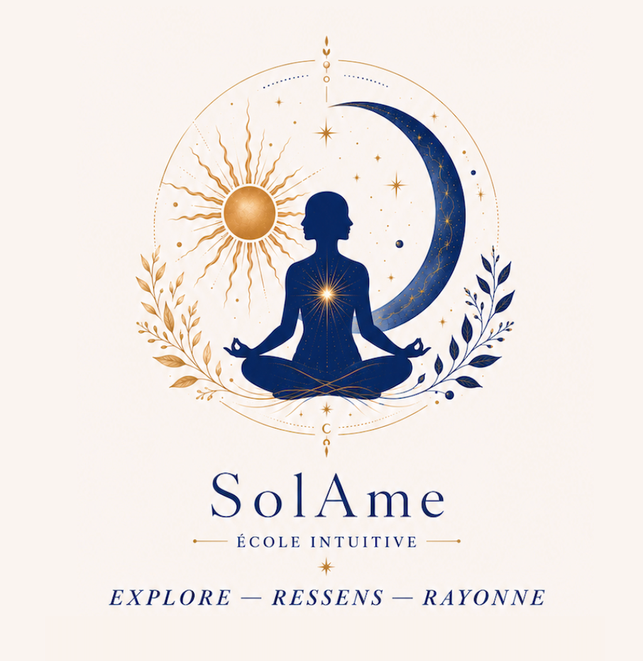
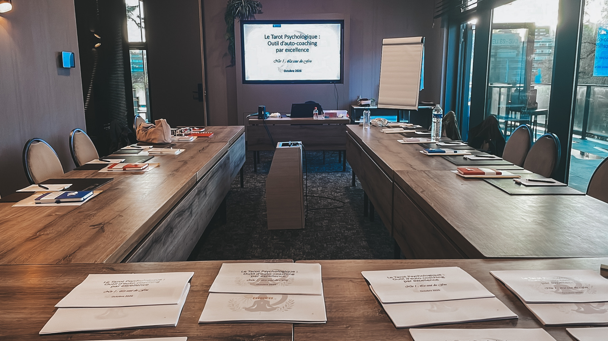

01 /
Psychologie
Comprendre nos émotions, nos comportements et nos mécanismes de fonctionnement.
PSYCHOLOGIE · NEUROSCIENCES · SYMBOLISME
Et si le tarot n’était pas fait pour prédire l’avenir… mais pour mieux comprendre l’être humain ?
Chez SolAme, le Tarot Psychologique devient un support de réflexion, de dialogue et de connaissance de soi.
Découvrir la formation ↓
Nivelles
LE LIEUHôtel Van der Valk – Nivelles
LES HORAIRESAccueil à partir de 8h30
Formation de 9h – 17h30
LE GROUPE14 participants maximum
L’INVESTISSEMENT350 €Supports et coffee corner compris

La méthode SolAme est née de la rencontre entre trois regards complémentaires.
Les cartes ne servent pas à annoncer ce qui va arriver. Elles aident à explorer ce qui est déjà là : nos émotions, nos schémas de pensée, nos ressources et notre manière de donner du sens à l’expérience.
Comprendre nos émotions, nos comportements et nos mécanismes de fonctionnement.
Éclairer la manière dont le cerveau traite les émotions et ouvre de nouvelles perspectives.
Explorer une situation autrement grâce à la richesse des archétypes et des images.
Ici, le tarot n’est jamais utilisé comme un outil de divination.
Il devient un support de réflexion profondément humain.
Je suis psychologue depuis 2001 et psychothérapeute depuis 2007.
Au fil de plus de 20 ans de pratique, j’ai développé une approche du tarot qui respecte pleinement le fonctionnement psychique de la personne.
Une méthode rigoureuse, structurée, accessible, sans croyance imposée.
« Je ne vous apprendrai pas à croire aux cartes. Je vous apprendrai à réfléchir avec elles. »— Lidwina HORLAIT
Une méthode pour vous approprier le tarot et développer votre auto-coaching, selon vos envies et vos besoins.
Comprendre le langage symbolique du tarot pour mieux vous l’approprier
Éviter les pièges
Jongler avec les particularités : cartes paradoxales, inversées…
Réaliser vos propres tirages psychologiques
Développer une interprétation nuancée et cohérente, propre à vous-même
Utiliser les cartes comme un véritable outil de réflexion
Poser des questions qui ouvrent de nouvelles perspectives
Relier les cartes à votre vécu pour construire une lecture cohérente, sans prédire l’avenir.
Le lunch est libre afin de correspondre aux envies de chacun.
Débutant·e ou déjà curieux·se, vous avez envie d’explorer le tarot avec un cadre sérieux et structuré.
Quelques instants de pratique et de partage autour du tarot psychologique.
UNE AUTRE MANIÈRE DE REGARDER L’HUMAIN
Vous ne repartirez pas seulement avec une meilleure connaissance du tarot, mais avec une autre manière d’observer les situations. Si cette approche résonne en vous, je serai heureuse de vous accueillir.
Je réserve ma place ↗Groupe volontairement limité à 14 participantsUNE QUESTION ?
Pour toute question sur la formation ou pour réserver votre place, contactez Lidwina.
Écrire un email ↗Psychologue depuis 2001 Psychothérapeute depuis 2007 SolAme, l’école du Tarot Psychologique